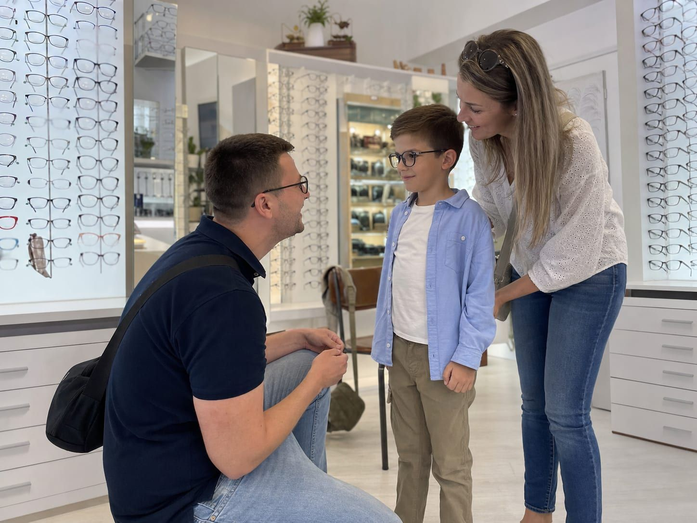
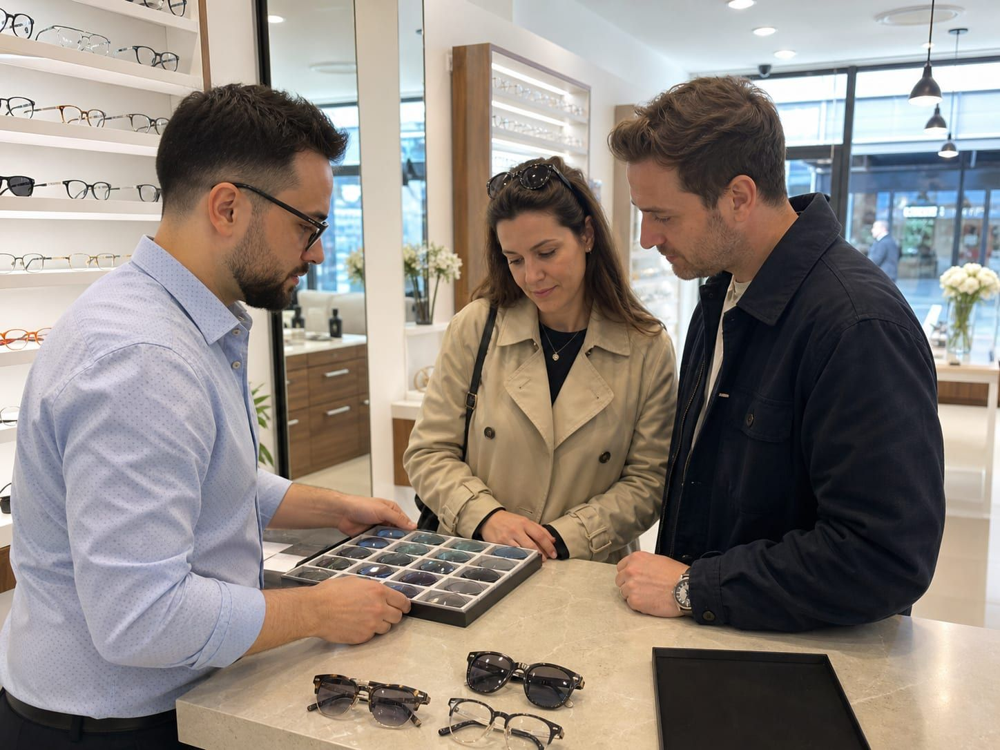

Egyedi szemüvegkészítés
Olyan szemüveget készítünk, amit öröm hordani – kerettől a lencséig minden az Ön szeméhez és mindennapjaihoz igazítva.
Nálunk a szemüveg nem polcról leemelt termék, hanem személyre szabott munka. A pontos látásvizsgálat után közösen választjuk ki a keretet és a lencsét, majd jól felszerelt műhelyünkben, helyben készítjük el – így a végeredmény tökéletesen illeszkedik az arcához, a látásához és az életviteléhez.
Legyen szó első szemüvegről, multifokális lencséről vagy egy régi kedvenc újragondolásáról, végigkísérjük a folyamaton, és őszintén elmondjuk, mi az, ami valóban Önnek való.
Amit az egyediség jelent nálunk
Nincs két egyforma szem – ezért nincs két egyforma szemüveg sem.
Pontos látásvizsgálat
Modern műszerekkel mérjük fel a látását, mielőtt bármit is javasolnánk.
Az Ön szeméhez igazítva
A lencsét a keret formájához és a pupillatávolságához csiszoljuk.
Helyben, a saját műhelyünkben
Nem külső laborra bízzuk – így gyorsabb, és a minőség a mi kezünkben van.
Őszinte tanácsadás
Azt ajánljuk, ami Önnek jó – nem azt, amiből nekünk több hasznunk van.

Így készül el az Ön szemüvege
Látásvizsgálat
Felmérjük a látását és meghallgatjuk, mihez használja majd a szemüveget.
Keret- és lencseválasztás
Együtt választunk keretet, majd a látásához illő lencsetípust és bevonatokat.
Helyben elkészítjük
Műhelyünkben precízen beillesztjük a lencséket a kiválasztott keretbe.
Beállítás és átadás
Az arcára igazítjuk, hogy kényelmesen és pontosan üljön az orrán.
Lencsék minden igényhez
Segítünk kiválasztani a látásához és életviteléhez illő lencsét.
Egyfókuszú
Tiszta látás egy távolságra
- Távolra vagy olvasáshoz
- Vékonyított kivitel is
- Karcálló bevonattal
Multifokális
Közel és távol egyben
- Zökkenőmentes átmenet
- Nincs több cserélgetés
- Tág, kényelmes látómezők
Kékfény-szűrő
Képernyő előtt is kímélő
- Csökkenti a szemfáradást
- Monitoros munkához ideális
- Bármely lencsére kérhető
Amit ügyfeleink mondanak
„Türelmesen végigvezettek a keret- és lencseválasztáson, a szemüveg pár nap alatt elkészült. Nagyon elégedett vagyok."
„Végre olyan szemüveget kaptam, ami tényleg kényelmes és jól is áll. Korrekt árak, kedves kiszolgálás."
„Az egész családnak itt készítjük a szemüveget. Precíz munka, barátságos hangulat – csak ajánlani tudom."
Készítsük el együtt a következő szemüvegét
Foglaljon időpontot látásvizsgálatra és tanácsadásra – a többit ránk bízhatja.